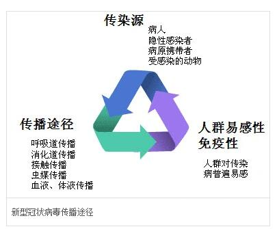

-
-
新型冠状病毒肺炎（Corona Virus Disease 2019，COVID-19），简称“新冠肺炎”，世界卫生组织命名为“2019冠状病毒病” [1-2]
，是指2019新型冠状病毒感染导致的肺炎。2019年12月以来，湖北省武汉市部分医院陆续发现了多例有华南海鲜市场暴露史的不明原因肺炎病例，证实为2019新型冠状病毒感染引起的急性呼吸道传染病。
| 中文名 |
新型冠状病毒肺炎 |
中文简称 |
新冠肺炎 |
| 外文名 |
COVID-19 |
世卫组织命名 |
019冠状病毒病 |
| 常见症状 |
发热、干咳、乏力 |
诊疗方案 |
新型冠状病毒肺炎诊疗方案（试行第八版） |
| 传播途径 |
直接传播、气溶胶传播和接触传播 |
读 音 |
冠”读guān |
新冠特征
根据现有病例资料，新型冠状病毒肺炎以发热、干咳、乏力等为主要表现，少数患者伴有鼻塞、流涕、腹泻等上呼吸道和消化道症状。重症病例多在1周后出现呼吸困难，严重者快速进展为急性呼吸窘迫综合征、脓毒症休克、难以纠正的代谢性酸中毒和出凝血功能障碍及多器官功能衰竭等。值得注意的是重症、危重症患者病程中可为中低热，甚至无明显发热。轻型患者仅表现为低热、轻微乏力等，无肺炎表现。从目前收治的病例情况看，多数患者愈后良好，少数患者病情危重。老年人和有慢性基础疾病者预后较差。儿童病例症状相对较轻
传播途径
据央视新闻消息，上海疫情防控工作发布会介绍：卫生防疫专家强调，可以确定的新冠肺炎传播途径主要为直接传播、气溶胶传播和接触传播。直接传播是指患者喷嚏、咳嗽、说话的飞沫，呼出的气体近距离直接吸入导致的感染；气溶胶传播是指飞沫混合在空气中，形成气溶胶，吸入后导致感染；接触传播是指飞沫沉积在物品表面，接触污染手后，再接触口腔、鼻腔、眼睛等粘膜，导致感染。

当地时间2021年12月1日，加拿大环境与气候变化部发布新闻通报宣布，首次发现境内的野生动物感染了新冠病毒。 [84]
2022年5月4日，美国健康生活新闻网发表报道称，密歇根大学研究发现，空气传播新冠病毒的可能性是接触物体表面传播的1000倍。密歇根大学的研究人员在大学校园内对空气和表面样本进行了检测，发现吸入病毒颗粒的概率大于手指接触感染的概率。